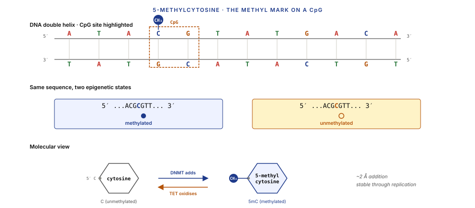
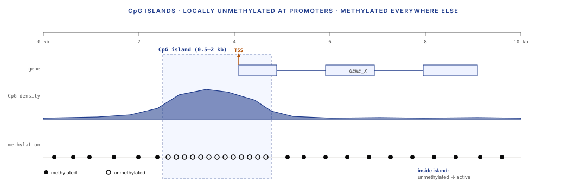
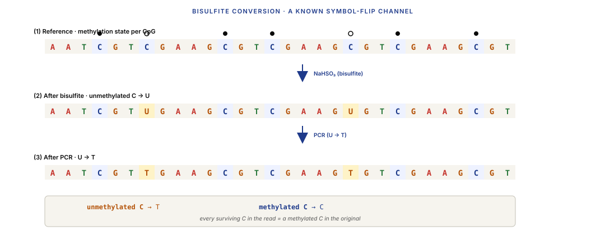
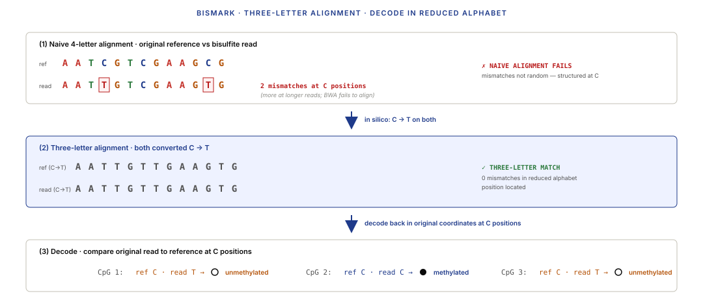
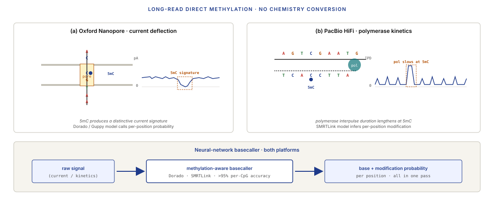
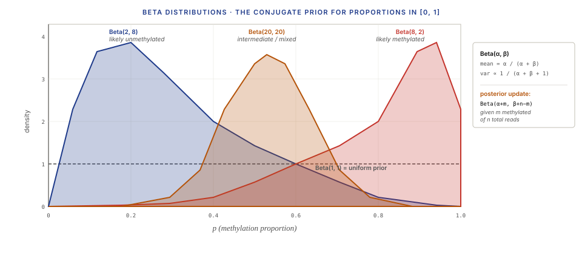
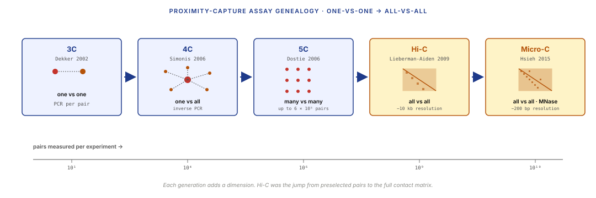

Five moves: read the methyl mark, decode the channel flip, fit the Beta posterior, build the contact matrix, run the eigendecomposition.
Learning objectives
- Explain what DNA methylation is at the molecular level, what a CpG island is, and why methylation matters for transcription and imprinting.
- Describe bisulfite conversion chemistry and explain why its output breaks the aligners from Lecture 2.
- Reconstruct the three-letter alignment strategy used by Bismark / BSMAP / methylpy, and relate it to decoding under a known symbol-flip channel.
- Describe long-read direct methylation calling (ONT, PacBio HiFi 5mC) and state one advantage over bisulfite sequencing.
- Fit and interpret a Beta distribution over methylation proportions, and explain why it is the right prior / likelihood for proportion data.
- Sketch the Hi-C wet-lab protocol end-to-end and read a contact matrix.
- Apply ICE / KR iterative normalisation to a raw contact matrix and explain what biases it removes.
- Identify A/B compartments as the sign of the first eigenvector of a normalised contact matrix, and compute TAD boundaries via an insulation score.
- Relate Hi-C data structures to three canonical EE / DSP problems: covariance matrices, PCA, and multidimensional scaling.
Part 1 · 25 min DNA Methylation Biology
1.1 What methylation is
DNA methylation is a small chemical modification — a methyl group ($\text{CH}_3$) attached to the 5-carbon of cytosine, producing 5-methylcytosine (5mC). In mammalian genomes, nearly all methylation happens on cytosines that sit in the dinucleotide CpG (cytosine followed by guanine along the DNA strand, with "p" denoting the phosphodiester bond between them).
The DNA alphabet is still A/C/G/T at the base level, but now each C position can be in one of two states — methylated or unmethylated — giving an effectively 5-symbol alphabet if you want to track epigenetic state alongside sequence. Most sequencing assays (Lectures 1–9) ignore methylation completely; they read the base identity and throw away the methyl mark. A separate class of assays (Part 2 of this lecture) is needed to see it.
Methylation matters because it is stable, heritable, and regulatory:
- Stable: once a CpG is methylated, it usually stays methylated through many cell divisions.
- Heritable: methylation patterns are copied from parent strand to daughter strand after replication by the maintenance methyltransferase DNMT1.
- Regulatory: methylation near a gene's promoter is typically associated with silencing; demethylation with activation.
1.2 CpG islands and the methylation landscape
Most CpGs in the mammalian genome are methylated. This sounds paradoxical — 5mC mutates preferentially to thymine via spontaneous deamination, which is why CpGs are ~5× depleted relative to the ATGC-uniform expectation across the genome. But a minority of CpGs — roughly 1% of total — sit in CpG islands: short (200 bp – 3 kb) regions with locally high GC content (>50%) and high CpG density (observed/expected CpG ratio > 0.6).
CpG islands are biologically special:
- ~60–70% of human gene promoters overlap a CpG island.
- CpG islands are usually unmethylated in normal cells, regardless of whether the associated gene is actively transcribed.
- Methylation of a promoter-associated CpG island is a strong silencing mark — gain of methylation at a CpG island usually turns the gene off.
The global methylation landscape has three tiers:
- CpG islands (~1% of CpGs): usually unmethylated; methylation gain silences linked genes.
- CpG island shores (~2 kb flanking): intermediate methylation; tissue-specific variation.
- Gene bodies and intergenic (the rest): usually methylated; methylation changes are less dramatic.


1.3 Methylation as gene regulation and imprinting
Two canonical regulatory roles:
Promoter methylation silences. When a gene's promoter CpG island gains methylation, the methylated CpGs recruit methyl-CpG-binding proteins (MBD family), which in turn recruit chromatin-compacting machinery. The promoter becomes less accessible to transcription factors and RNA polymerase. ATAC-seq (L9) would show a loss of the promoter peak; ChIP for activating marks (H3K4me3, H3K27ac) would show their loss; RNA-seq (L5) would show the transcript drop. All three readouts agree when methylation is the cause.
Imprinting. For ~100 human genes, the allele inherited from the father is silenced and the allele from the mother is active (or vice versa, depending on the gene). The asymmetry is established by sex-specific methylation during germ-cell development — the differentially methylated region (DMR) on the silenced allele is set in the sperm or egg and preserved through embryogenesis. Loss of imprinting causes several genetic disorders (Prader-Willi, Angelman, Beckwith-Wiedemann) and features prominently in cancer biology.
Dynamic demethylation. Methylation is not permanent. The TET family of enzymes oxidise 5mC to 5-hydroxymethylcytosine (5hmC), which is a step in active demethylation. 5hmC is itself a readable epigenetic mark — present at enhancers in embryonic stem cells and neurons, for example. Distinct assays can read 5mC vs 5hmC selectively (oxBS-seq, TAB-seq).
Part 2 · 40 min Bisulfite Sequencing and the Three-Letter Alignment Problem
2.1 Bisulfite conversion chemistry
Regular sequencing reads DNA bases but ignores methylation. To read methylation, we need a chemistry that distinguishes 5mC from unmethylated C at the sequencing readout level. Bisulfite conversion (Frommer et al. 1992) solves this elegantly:
- Treat single-stranded DNA with sodium bisulfite (chemical symbol $\text{NaHSO}_3$).
- Unmethylated cytosines (C) react with bisulfite and are converted to uracil (U).
- Methylated cytosines (5mC) do not react — they survive the treatment unchanged.
- PCR amplification converts the uracil to thymine (T), because U is read as T during replication.
Net result after bisulfite treatment + PCR:
- Unmethylated C positions → read as T.
- Methylated C (5mC) positions → read as C.
Now the sequencer output is a mixture of three letters (A, G, T) and one retained C at methylated positions. Every C you see in a bisulfite read was methylated. Every C → T change compared to the reference is an unmethylated C that got converted.

2.2 Why standard aligners break
Lecture 2's aligners (BWA, Bowtie2) assume the read was drawn from the reference sequence with only small random differences (sequencing errors, SNPs). Bisulfite reads violate that assumption catastrophically:
Take a reference region AATCGTCGAAGCG. Methylation state unknown. After bisulfite + PCR, the read could be any of:
Reference: AATCGTCGAAGCG All unmeth'd: AATTGTTGAAGTG (all Cs → T, including non-CpG Cs) All meth'd: AATCGTCGAAGCG (all Cs survive) Mixed: AATCGTTGAAGTG (some methylated, some not)
A vanilla aligner sees 3–5 mismatches per ~100 bp read. BWA with default parameters fails to align — too many mismatches. Even if it could align, it would miss the right position half the time, because the converted read maps ambiguously to any C-T mismatch region of the genome.
The mismatches are not random. They happen at a known subset of positions (Cs in the reference) and always go in one direction (C → T). A sequencing-noise aligner models Gaussian/Phred-like errors; bisulfite errors are structured and heavy-tailed. Need a specialised aligner.
2.3 Three-letter alignment — Bismark, BSMAP, methylpy
Bismark (Krueger & Andrews 2011) introduced the three-letter alignment strategy that dominated the field from 2011 onward.
The trick:
- In silico, make two copies of the reference genome:
- Forward converted: every C → T.
- Reverse converted: every G → A (handles the reverse-strand case).
- In silico, make two converted versions of each read:
- C → T converted (for reads from the forward-bisulfite strand).
- G → A converted (reads from the reverse-bisulfite strand).
- Align each converted read to each converted reference using a standard aligner (Bismark wraps Bowtie2).
- Pick the best hit across the four possible mappings.
- After alignment, compare the original (unconverted) read to the original reference at C positions only — every C in the read is a methylation call; every C → T change in the read is an unmethylation call.
The alignment step is in the "three-letter" world (A/G/T or A/C/T only, depending on strand), hence the name. The clever part: once the read is placed, you can go back to the original sequences and read methylation off as base matches at C positions.

Other major aligners:
- BSMAP (Xi & Li 2009). Uses a different strategy — bit-encoded hashing with degenerate bases representing C/T ambiguity. Faster on some datasets, slightly different biases.
- methylpy (Schultz et al. 2015). The Salk Institute's aligner, used for the Roadmap Epigenomics whole-genome bisulfite datasets. Combines alignment with allele-specific methylation calling.
- Walt (Chen et al. 2016). Modern GPU-accelerated option.
2024 default: Bismark for WGBS (whole-genome bisulfite sequencing); BSMAP or methylpy for large-scale epigenome atlases.
2.4 Long-read direct methylation calling
A different approach emerged from long-read platforms (ONT, PacBio HiFi) in 2019–2022: call methylation directly from the raw sequencing signal, without bisulfite conversion at all.
Oxford Nanopore sequences DNA by threading it through a protein pore and recording electrical current changes. 5mC alters the current signature slightly compared to unmodified C — the pore "feels" the methyl group physically. Basecallers with a methylation-aware neural network (Guppy's hac_modbases model, Dorado in modern versions) output both the base call and a methylation probability per position. Accuracy on 5mC calling at CpG is now >95%.
PacBio HiFi measures polymerase kinetics during base incorporation. 5mC causes a slight slowdown (interpulse duration shifts). The HiFi 5mC model (as of PacBio SMRTLink 11+) calls methylation with ~95% accuracy per CpG.
Advantages over bisulfite:
- No chemistry step — the same library that you use for DNA sequencing gives you methylation as a side product.
- Long reads — direct resolution of methylation across repeats, phased haplotypes, and structural variants (CpGs on the two alleles can be called separately).
- Other modifications — 6mA, 4mC, 5hmC can be called by specialised models.
Disadvantages:
- Cost — long-read runs are still more expensive per base than Illumina + bisulfite.
- Accuracy — 95% per CpG is worse than bisulfite's ~99% at current read depths.
- Coverage — long-read throughput is lower, so CpGs in low-coverage regions have less-certain calls.

2024 trend: long-read direct methylation is replacing bisulfite in labs that have long-read instruments, especially for cancer WGS (where SVs + methylation + genome are all needed together).
Part 3 · 25 min Differential Methylation
3.1 The DMR problem
You have two groups (tumour vs normal, disease vs control, treatment vs vehicle). You want to find differentially methylated regions (DMRs) — regions where the methylation level differs systematically between groups.
The input: per-CpG methylation proportions per sample. If CpG $i$ in sample $j$ has $m_{ij}$ methylated reads and $t_{ij}$ total reads, the methylation proportion is $p_{ij} = m_{ij} / t_{ij}$.
The output: a ranked list of regions with a significance estimate per region.
This is structurally similar to Lecture 6's differential expression and Lecture 9's differential binding — but with one crucial difference: the data is proportion data, not count data. Methylation is bounded in $[0, 1]$ per CpG per sample. The noise model has to respect that bound.
3.2 The Beta distribution for proportion data
The natural distribution for a random variable in $[0, 1]$ is the Beta distribution:
$$p \sim \text{Beta}(\alpha, \beta), \quad \alpha, \beta > 0$$
with density $f(p) = \frac{p^{\alpha-1} (1-p)^{\beta-1}}{B(\alpha, \beta)}$, where $B(\cdot, \cdot)$ is the beta function normaliser.
Parameters:
- $\alpha$ ~ "number of successes + 1"
- $\beta$ ~ "number of failures + 1"
- mean: $\mu = \alpha / (\alpha + \beta)$
- variance: $\mu(1-\mu) / (\alpha + \beta + 1)$
The Beta is the conjugate prior to the Binomial — given a Beta($\alpha, \beta$) prior and $m$ successes in $n$ trials, the posterior is Beta($\alpha + m, \beta + n - m$). This gives clean analytical inference for proportions.
For differential methylation, the per-CpG count $m_{ij}$ is modelled as Binomial($t_{ij}$, $p_i$ for group $g(j)$), and the group-level proportion $p_i$ is modelled as Beta. The full model is a Beta-Binomial: groups differ if their Beta posteriors have non-overlapping credible intervals, or equivalently if a likelihood-ratio test on the two-group Beta-Binomial model rejects.

3.3 methylKit, BSmooth, and DSS
Three R packages dominate DMR analysis:
methylKit (Akalin et al. 2012). Classic per-CpG test — Fisher's exact test or logistic regression per site, with BH correction. Good for screening; does not borrow information across sites (no smoothing).
BSmooth (Hansen et al. 2012). Smooths methylation proportions across genomic windows before testing. Rationale: methylation varies smoothly over scales of 100s–1000s of bp, so smoothing reduces noise without blurring real DMRs. Uses a local-likelihood smoother; reports DMRs as contiguous regions passing a significance threshold.
DSS (Feng et al. 2014). Fits a Beta-Binomial mixed model with per-site dispersion estimated by empirical Bayes shrinkage (analogous to DESeq2's dispersion shrinkage from Lecture 6). Tests for differential methylation using a Wald test. Best power in typical WGBS comparisons.
In all three, the logic is:
- Pool reads per CpG per sample.
- Fit a group-specific proportion per CpG (with some sharing or smoothing across CpGs / samples).
- Test for group difference.
- BH-correct.
- Merge adjacent significant CpGs into DMRs.
Part 4 · 40 min Hi-C and Chromosome Conformation Capture
4.1 What Hi-C measures
Lectures 1–9 treated the genome as a 1D string of letters. The physical reality is 3D: DNA is packaged into chromatin, chromatin is packaged into chromosomes, chromosomes occupy territories in the nucleus. Two loci that are megabases apart on the 1D sequence may be micrometres apart — or nanometres apart — in 3D space. Gene regulation often depends on 3D contacts: an enhancer megabases upstream can only activate a gene if the two loci are folded into physical proximity.
Hi-C measures, for every pair of genomic loci, how often they are in close 3D contact. The output is a contact matrix $C[i, j]$ — for a discretised genome of $N$ bins (say, 10 kb bins, so $N \approx 300{,}000$ for a human genome), the matrix entry is the number of sequencing read-pairs that map with one mate in bin $i$ and the other mate in bin $j$.
High $C[i,j]$ means bins $i$ and $j$ are often in physical contact. Low $C[i,j]$ means they are rarely together.
This is a purely ensemble measurement: the counts are aggregated across millions of cells. A single cell's contact map is sparse and stochastic; Hi-C gives you the population average.
4.2 The 3C family
Hi-C is the last member of a family of progressively-more-parallel proximity assays, all based on the same chemistry trick:
3C (Dekker et al. 2002). Chromosome Conformation Capture. Crosslink chromatin, digest with a restriction enzyme, ligate the cut ends (favouring ligation between spatially-close ends), PCR a specific pair of loci. One-vs-one: tests contact frequency for a single predefined pair.
4C (Simonis et al. 2006). Circular 3C. Same chemistry but self-circularise the products and use inverse PCR from a single "viewpoint". One-vs-all: tests how the viewpoint contacts the rest of the genome.
5C (Dostie et al. 2006). Ligation-mediated amplification from many primers. Many-vs-many but only for a pre-selected set of loci (up to ~600,000 pairs).
Hi-C (Lieberman-Aiden et al. 2009). Biotin-tagged ligation junctions + sequencing. All-vs-all: every pair of loci in the genome. The landmark paper that gave the field the contact matrix.
Micro-C (Hsieh et al. 2015). Same all-vs-all idea but with MNase digestion (nucleosomal resolution) instead of a restriction enzyme. Resolves ~200 bp features vs Hi-C's ~1 kb floor. More expensive per cell but much higher resolution.

4.3 The Hi-C library protocol
The core chemistry in six steps:
- Crosslink. Formaldehyde on intact cells — same as ChIP (L9), freezes 3D contacts by covalently bonding proteins and DNA that are in proximity.
- Digest. Restriction enzyme (MboI, DpnII, HindIII depending on the protocol) cuts the cross-linked chromatin at specific recognition sites. Chromatin ends stick up from the crosslinked nuclear matrix.
- Fill-in + biotin-label. Klenow polymerase fills the sticky ends while incorporating biotinylated dCTP. Every cut site is now biotin-tagged.
- Ligate proximity. T4 DNA ligase religates the ends. Because the cross-linked ends are physically close, ligations happen preferentially between nearby fragments — this is where the spatial information enters the library.
- Shear, pull down, sequence. Break the crosslinks; shear to ~300 bp fragments; use streptavidin beads to pull down only fragments containing a biotinylated ligation junction; Illumina paired-end sequence.
- Align. Paired-end reads map to two distinct genomic positions — the two loci that were in contact. Each read-pair contributes one entry $C[i, j] += 1$.
![Six-step protocol schematic. (1) Crosslink nucleus with formaldehyde, forming covalent bonds between nearby fragments. (2) Restriction digest with scissors icon. (3) Fill-in and biotin-label with Klenow polymerase; biotin shown as orange triangles on fragment ends. (4) T4 ligase joins adjacent ends preferentially in 3D proximity, producing chimeric fragments. (5) Shearing (sonication icon) then streptavidin pulldown. (6) Paired-end Illumina sequencing; two reads map to two distinct genomic positions; one entry added to the contact matrix.](../diagrams/lecture-10/08-hic-protocol.svg)
Typical modern Hi-C experiment: ~500M paired-end reads per sample, producing a 10 kb–resolution contact matrix (most commonly) or a 5 kb matrix with deeper sequencing. The best Micro-C experiments (~1B reads) hit sub-kb resolution.
4.4 The contact matrix as raw output
For a human genome binned at 10 kb resolution, $N \approx 290{,}000$ bins. The raw contact matrix $C$ is $N \times N$, symmetric ($C[i,j] = C[j,i]$), and dense only near the diagonal — most contacts are within 1 Mb of the original locus, because random thermal motion couples nearby loci more easily than distant ones.
Stored naively the matrix is huge ($\sim 10^{11}$ cells, most near-zero). In practice it's stored sparse: HDF5 (in the cooler format, Abdennur & Mirny 2020) or .hic binary (Durand et al. 2016). Coordinates are bin-indices plus chromosome labels.
What it looks like:
- Strong diagonal: nearby bins always contact frequently.
- Distance-decay off-diagonal: contact frequency falls as a power law with genomic distance.
- Structure off-diagonal: deviations from the smooth decay are the interesting part — they are real 3D structure (TADs, loops, compartments) that we extract in Part 5.
![Two matrix heatmaps side by side over the same genomic window. Left panel 'Raw': bright diagonal, smooth distance-decay off-diagonal, visible banding artefacts — two or three rows/columns darker or brighter than neighbours, indicating bin-specific biases; log colour scale. Right panel 'ICE-normalised': diagonal still visible but less dominant; banding gone; triangular TAD blocks visible along the diagonal; faint off-diagonal checkerboard compartment pattern. Annotations mark 'banding = bin bias', 'TADs', and 'compartments'.](../diagrams/lecture-10/09-contact-matrix.svg)
Part 5 · 40 min From Contacts to Structure
5.1 Normalisation — ICE and KR
The raw matrix has two kinds of systematic bias that need correction before structural interpretation:
- Bin-specific coverage bias: some bins have systematically more or fewer reads due to mappability (repeats → low coverage), GC content (extremes → low coverage), or restriction-site density (few sites → low read-pair count anywhere in that bin).
- Distance-decay: contact frequency falls with genomic distance as a power law, roughly $C[i,j] \sim |i-j|^{-\gamma}$ with $\gamma \approx 1$. The distance decay dominates every raw map and obscures non-diagonal structure.
ICE — Iterative Correction and Eigenvector decomposition (Imakaev et al. 2012). The standard normalisation. Assumes that each bin has a "visibility" bias factor $b_i$, and the observed contact is $C[i,j] = b_i b_j T[i,j]$ where $T[i,j]$ is the true underlying contact. Iteratively normalise rows and columns to sum to a constant — the rescaling at each step estimates the $b_i$. Converges in ~20 iterations. Output: a matrix where each row and column sum to 1 (equal-visibility assumption).
KR — Knight-Ruiz normalisation (Knight & Ruiz 2013, applied to Hi-C by Rao et al. 2014). A faster matrix-balancing algorithm from numerical linear algebra. Solves the same problem (find a diagonal matrix $D$ such that $DCD$ has constant row and column sums) by a Newton-type method. Converges in few iterations; produces the same result as ICE up to numerical tolerance. Default in Juicer.
Distance detrending. Separately, most analyses remove the distance-decay background by computing an expected-by-distance profile and dividing: $O/E[i,j] = C[i,j] / E(|i-j|)$. The O/E matrix is where compartment-scale and loop-scale structure becomes clearly visible.
5.2 TADs — Topologically Associating Domains
A TAD (Dixon et al. 2012, Nora et al. 2012) is a contiguous ~200 kb – 2 Mb genomic region within which contacts are frequent and across whose boundaries contacts are relatively rare. On the contact matrix, TADs appear as triangular blocks along the diagonal — a square of high contact density followed by a sharp drop at the TAD boundary.
Biologically, TADs are real 3D domains: genes within the same TAD tend to be co-regulated; enhancers tend to activate only promoters within the same TAD; the boundaries are enriched for CTCF binding (L9 §3).
TAD calling algorithms are fundamentally 1D boundary-detection problems on the contact matrix. Given that TAD boundaries manifest as local minima in inter-bin contact density, most algorithms compute an insulation score per bin and threshold local minima as boundaries:
- Insulation score (Crane et al. 2015): for each bin $i$, sum contacts in a symmetric window around $i$ that cross bin $i$ (i.e., pairs of bins $(j, k)$ with $j \le i < k$). Normalise to the local mean. Low score = strong boundary.
- Directionality Index (Dixon 2012): for each bin, compute the asymmetry between upstream and downstream contacts. Bins with strong positive DI upstream and strong negative DI downstream are boundary candidates.
- Arrowhead (Rao 2014): a matrix-transformation approach that converts the contact matrix into a scale-independent TAD-strength map.
In 2024, the insulation score is the most widely used; TopDom, HiCExplorer's hicFindTADs, and cooler's call-dots implement it.
![A large contact-matrix heatmap of a ~10 Mb region showing three feature scales simultaneously. Large-scale: a plaid/checkerboard A/B compartment pattern across the full matrix. Medium-scale: about 15 triangular TAD blocks along the diagonal, each ~300 kb to 1 Mb. Small-scale: 4–6 bright focal 'loop' spots near TAD corners. Annotations label each scale with its size range. Below the matrix: a 1D insulation-score track with local minima marked as TAD boundaries via small downward-pointing triangles.](../diagrams/lecture-10/10-tads-compartments.svg)
5.3 A/B compartments — the first eigenvector
Zoom out further, and the contact matrix reveals a checkerboard pattern at Mb scale: some regions contact each other preferentially across the whole chromosome, forming two interleaved sets. These are the A compartment (euchromatin, active, gene-dense) and the B compartment (heterochromatin, inactive, gene-poor).
The formal recipe (Lieberman-Aiden et al. 2009):
- Start with the O/E (distance-detrended) contact matrix.
- Compute the correlation matrix of the O/E — for each pair of bins, correlate their contact profiles across all other bins.
- Compute the first eigenvector of the correlation matrix.
- Each bin's eigenvector coordinate is positive or negative. Bins with the same sign are in the same compartment (by convention, positive = A, negative = B; fix the sign using an external reference like gene density).
The first eigenvector is a 1D scalar per bin. Plot it along the chromosome coordinate and you see long stretches of consistent sign alternating with opposite-sign stretches — the A/B compartmentalisation.
5.4 Loops and focal enrichment
At the finest scale, chromatin loops appear as bright focal spots in the contact matrix — a specific bin $i$ and bin $j$ contact each other much more than their neighbours do, producing a "dot" away from the diagonal. Most loops span tens to hundreds of kb and link an enhancer to a promoter, or two CTCF sites that anchor a loop.
HICCUPS (Rao et al. 2014) is the standard loop-caller. It compares each candidate $(i, j)$ entry to a local neighbourhood in the matrix, testing whether the focal point is significantly brighter than its immediate surroundings. The statistical framing is — unsurprisingly by this point in the course — a local-Poisson detection problem, structurally identical to MACS2 (L9 §3.2).
The biology: loops enforce enhancer-promoter specificity (only promoters in the same loop get the activating signal from an enhancer) and establish boundaries between TADs (CTCF-anchored loops often mark TAD boundaries). The loop catalogue from Rao 2014 — ~10,000 loops in human GM12878 — is a standard reference.
Part 6 · 30 min EE Framings — The Linear-Algebra View
This Part pulls three classical EE / DSP patterns out of the Hi-C analysis workflow. None of them is new to an EE-trained student — they appear in any signal processing or linear algebra course. What's new is seeing genomics use them.
6.1 Hi-C contact matrix as covariance; compartments as PCA
The (normalised, distance-detrended) Hi-C contact matrix $C$ is symmetric, positive-semi-definite after normalisation, and $N \times N$. Structurally, it's a covariance/correlation matrix — specifically, it can be interpreted as the empirical covariance of "genomic bins treated as random variables, with the ensemble over cells as the sampling distribution."
Given that framing, the first eigenvector of the correlation matrix of $C$ is the first principal component of the data — the direction along which bins vary most in their contact behaviour. Bins with large positive loadings on this PC are behaving similarly to each other (A compartment); bins with large negative loadings are the opposite (B compartment). The bipartition arises because the dominant source of variance in contact patterns is compartment identity.
![Three panels left to right. (a) O/E normalised contact matrix showing checkerboard pattern, labelled 'observed/expected · distance-detrended'. (b) Correlation matrix computed from the columns of (a), sharper checkerboard with clear bipartite block structure, labelled 'correlation matrix (rowwise)'. (c) First eigenvector plotted as a 1D track vs bin index, positive regions shaded in cobalt (A compartment), negative in amber (B compartment). Arrows between panels show the computational flow: corr() operator between (a) and (b), eigen() between (b) and (c).](../diagrams/lecture-10/11-compartments-eigenvector.svg)
6.2 TAD calling as block-diagonal / change-point / image segmentation
Look at a raw contact matrix and TADs look like bright blocks along the diagonal. That visual impression is also the algorithmic framing:
- Block-diagonal structure detection. TADs are dense sub-matrices arranged along the diagonal. Block-diagonal structure appears in many EE problems — community detection in graphs (the adjacency matrix is block-diagonal if communities are well-separated), Gaussian-mixture covariance matrices, image segmentation (neighbouring pixels with similar intensity form blocks).
- Change-point detection. A TAD boundary is a change-point in the contact profile — the population of bins that a given bin contacts shifts abruptly at the boundary. Change-point detection algorithms (PELT, binary segmentation, Bayesian online change-point detection) all apply. The insulation score is the simplest change-point statistic — local deficit in crossing contacts.
- Image segmentation. The contact matrix can be read as a 2D image where pixel intensity is contact frequency. TADs are "segments" in the computer-vision sense — contiguous pixel regions with similar intensity. Classic image-segmentation methods (watershed, graph cuts) have been applied to Hi-C matrices directly.
The three framings are equivalent views of the same mathematical object. Any student who has seen one of them already has the right intuition for TAD calling.
![Three stacked panels with a shared x-axis of bin indices. (a) Contact matrix window showing 4 triangular TAD blocks clearly visible along the diagonal. (b) 1D insulation score track at each bin, with several local minima marking TAD boundaries; boundary detection threshold drawn as a horizontal dashed line; minima below threshold highlighted. (c) Called TADs as coloured intervals, each a different accent hue. An annotation banner at the bottom states '2D → 1D reduction → change-point detection = TAD boundary detection'.](../diagrams/lecture-10/12-tad-insulation.svg)
6.3 3D structure reconstruction as multidimensional scaling
If Hi-C gives you a contact matrix, the natural question is: can we invert it to get the actual 3D coordinates of each bin? If we treat high-contact pairs as "close" and low-contact pairs as "far", we have a distance matrix — and given a distance matrix, recovering coordinates is the classical multidimensional scaling (MDS) problem.
The recipe:
- Convert contact frequencies to distances: $d_{ij} = f(C[i,j])$ for some monotone decreasing $f$ (common choice: $d_{ij} = (C[i,j])^{-\alpha}$ with $\alpha \in [0.5, 1]$).
- Run classical MDS: find 3D coordinates $\mathbf{x}_1, \ldots, \mathbf{x}_N$ such that $\|\mathbf{x}_i - \mathbf{x}_j\|_2 \approx d_{ij}$.
- Classical MDS is itself an eigendecomposition — it solves the problem via eigenvectors of the doubly-centred squared-distance matrix (standard linear algebra).
Tools: 3DMax (Oluwadare et al. 2018), PASTIS (Varoquaux et al. 2014), GEM (Zhu et al. 2018). All solve variants of the same MDS-like optimisation. Output: per-bin 3D coordinates, which you can visualise as a polymer trajectory through nuclear space.
Caveat: Hi-C is ensemble-averaged — the resulting "structure" is a single best-fit to many cells' averaged contact profile. Real per-cell structures vary; single-cell Hi-C (Nagano et al. 2013) gives per-cell structures but at much lower read counts.
Wrap-up · 10 min Takeaways, homework, and next lecture
What you should take away
- Methylation adds a second layer of information to DNA sequence. Each cytosine can be methylated or not; methylation near promoters correlates with silencing; methylation patterns are cell-type specific.
- Bisulfite sequencing is a known symbol-flip channel. Unmethylated C → T; methylated C → C. Standard aligners break; three-letter alignment (Bismark) projects both read and reference into a reduced alphabet where the channel is identity, aligns, then decodes methylation per-C in original coordinates.
- Long-read direct methylation calling is replacing bisulfite where long-read instruments are available. Slight accuracy penalty, but no chemistry step, full-length phasing, and other modifications accessible.
- Differential methylation is Beta-Binomial. Per-CpG proportions fit a Beta distribution; per-read counts fit a Binomial; the compound respects the [0,1] bound. DSS, methylKit, BSmooth are the standard wrappers.
- Hi-C measures 3D proximity. The contact matrix is the ensemble average of bin-bin contact frequencies. ICE/KR normalisation removes bin-specific bias; distance detrending removes the power-law background.
- A/B compartments are the first eigenvector of the normalised contact matrix. Compartmentalisation is PCA on a covariance matrix — no dressing-up needed.
- TADs are block-diagonal structure. The insulation score reduces the 2D matrix to 1D; boundary detection is change-point analysis on that signal.
- 3D reconstruction from Hi-C is multidimensional scaling — eigendecomposition of a centred distance matrix, keep the top 3 eigenvectors.
Next lecture
Long reads and the pangenome. PacBio HiFi, Oxford Nanopore, what accuracy improvements unlock (SVs, repeats, T2T assemblies). The graph genome concept: why a single linear reference is a lie, and how seed-and-extend generalises to alignment on a DAG.
Homework
- Download a published WGBS dataset (e.g. ENCODE K562 WGBS). Run Bismark end-to-end: convert reference, align, deduplicate, extract methylation. Report: per-CpG coverage distribution; overall conversion efficiency; fraction of CpGs with intermediate methylation (20–80%).
- Pick a gene with a known tissue-specific expression pattern (e.g. HOXA9). Extract methylation around its promoter in two tissues where it differs. Compute a per-CpG methylation difference; identify candidate DMRs.
- Run DSS on the same data; compare its DMR calls to your CpG-by-CpG picks. Report: where DSS adds calls (via smoothing + sharing) and where it drops single-CpG spikes.
- Download a Hi-C map (e.g. Rao 2014 K562 at 10 kb resolution) from GEO. Compute the insulation score using a 250 kb window. Identify boundaries. Compare to the paper's published TAD calls.
- Compute the first eigenvector of the observed/expected-normalised intra-chromosomal contact matrix for chromosome 14. Plot the sign along the chromosome. Verify that positive regions overlap gene-dense intervals (A compartment).
Recommended reading
- Frommer, M., McDonald, L. E., Millar, D. S., et al. (1992). A genomic sequencing protocol that yields a positive display of 5-methylcytosine residues in individual DNA strands. PNAS 89, 1827–1831. (The bisulfite paper.)
- Krueger, F., & Andrews, S. R. (2011). Bismark: a flexible aligner and methylation caller for Bisulfite-Seq applications. Bioinformatics 27, 1571–1572.
- Feng, H., Conneely, K. N., & Wu, H. (2014). A Bayesian hierarchical model to detect differentially methylated loci from single nucleotide resolution sequencing data. Nucleic Acids Research 42, e69. (The DSS paper.)
- Akalin, A., Kormaksson, M., Li, S., et al. (2012). methylKit: a comprehensive R package for the analysis of genome-wide DNA methylation profiles. Genome Biology 13, R87.
- Dekker, J., Rippe, K., Dekker, M., & Kleckner, N. (2002). Capturing chromosome conformation. Science 295, 1306–1311. (The 3C paper.)
- Lieberman-Aiden, E., van Berkum, N. L., Williams, L., et al. (2009). Comprehensive mapping of long-range interactions reveals folding principles of the human genome. Science 326, 289–293. (The Hi-C paper.)
- Rao, S. S. P., Huntley, M. H., Durand, N. C., et al. (2014). A 3D map of the human genome at kilobase resolution reveals principles of chromatin looping. Cell 159, 1665–1680.
- Dixon, J. R., Selvaraj, S., Yue, F., et al. (2012). Topological domains in mammalian genomes identified by analysis of chromatin interactions. Nature 485, 376–380. (TADs.)
- Imakaev, M., Fudenberg, G., McCord, R. P., et al. (2012). Iterative correction of Hi-C data reveals hallmarks of chromosome organization. Nature Methods 9, 999–1003. (ICE normalisation.)
- Abdennur, N., & Mirny, L. A. (2020). Cooler: scalable storage for Hi-C data and other genomically labeled arrays. Bioinformatics 36, 311–316.
- Crane, E., Bian, Q., McCord, R. P., et al. (2015). Condensin-driven remodelling of X chromosome topology during dosage compensation. Nature 523, 240–244. (Insulation score.)
- Cooler documentation: cooler.readthedocs.io
- Bismark user guide: felixkrueger.github.io/Bismark
- Juicer documentation: github.com/aidenlab/juicer
Appendix — timing summary
| Block | Time | Cumulative |
|---|---|---|
| Part 1 — DNA Methylation Biology | 25 min | 0:25 |
| Part 2 — Bisulfite Sequencing and Three-Letter Alignment | 40 min | 1:05 |
| Part 3 — Differential Methylation | 25 min | 1:30 |
| Part 4 — Hi-C and Chromosome Conformation Capture | 40 min | 2:10 |
| Part 5 — From Contacts to Structure | 40 min | 2:50 |
| Part 6 — EE Framings: The Linear-Algebra View | 30 min | 3:20 |
| Wrap-up | 10 min | 3:30 |
Total: ~3h 30min of content.